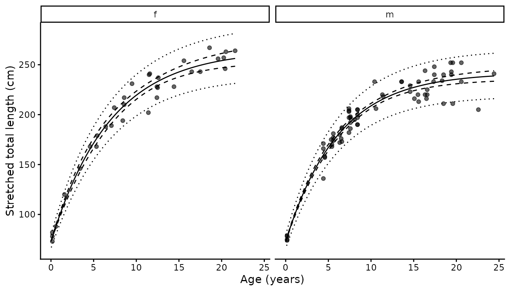
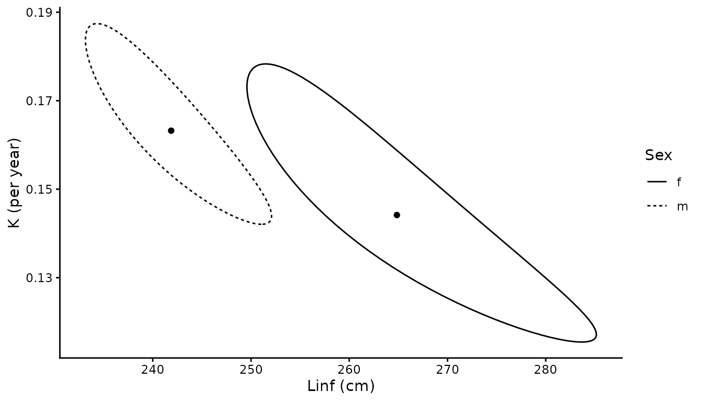

Background
Growth is usually described with a von Bertalanffy function, and
usually parameterised by
,
and
.
The third parameter is the hypothetical age at zero length, which has no
biological meaning and is often estimated at implausible values when
there are few young animals in the sample. growth() uses
the reparameterisation of Harry et al. (2019), replacing
with length at birth:
is interpretable, can be measured directly, and anchors the curve at the left-hand end where age data are usually weakest. and are estimated separately for each group, typically sex, while is shared.
Observed length is normally distributed about the curve with a standard deviation proportional to expected length, , following Cope and Punt (2007). Individual variability in length at age therefore grows with size, which is what length at age data normally look like.
Two further components from Harry et al. (2019) are optional, and can be used independently.
Ageing error
Ages read from vertebrae are estimates, not measurements. Treating them as exact can bias growth estimates, by an amount that depends on how imprecise the readings are and where in the age range the error falls. The model treats true age as a random effect, with each reading an observation of it:
The ageing CV is computed outside the likelihood from replicate readings, following Chang (1982), and held fixed.
Neonates
Animals with an unhealed umbilical scar are known to be age zero. Their lengths are direct information on :
These are often available in numbers, and from animals that were never aged, so they add information at no cost.
Fitting is by maximum likelihood with RTMB, the random
effects integrated out by the Laplace approximation. Confidence
intervals on the curve come from the delta method; prediction intervals
add
.
This is a port of the TMB implementation used in Harry
et al. (2019). The examples below use the data from that study.
Data
blacktip contains 475 common blacktip sharks,
Carcharhinus limbatus, from south-east Queensland and northern
New South Wales. Vertebrae were read by two readers for 102 sharks, all
of them from New South Wales, where most sharks were caught on demersal
setlines. A further 136 neonates with open or partially healed umbilical
scars were sampled in Moreton Bay, Queensland. None of the neonates were
aged. Length is stretched total length in cm.
Basic usage
g <- growth(STL, age_agree, sex, data = blacktip, neonate = neonate)
summary(g)
#> # A tibble: 2 × 17
#> group Linf Linf_lower Linf_upper K K_lower K_upper L0 L0_lower
#> <chr> <dbl> <dbl> <dbl> <dbl> <dbl> <dbl> <dbl> <dbl>
#> 1 f 265. 253. 276. 0.144 0.123 0.165 72.8 72.2
#> 2 m 242. 236. 248. 0.163 0.148 0.179 72.8 72.2
#> # ℹ 8 more variables: L0_upper <dbl>, CV_L <dbl>, n <int>, n0 <int>,
#> # cv_age <dbl>, nll <dbl>, AIC <dbl>, convergence <lgl>The summary has one row per group.
and
differ between them;
and
are shared and so repeat. Also reported are the number of aged animals
per group (n), the number of neonates (n0),
the ageing CV if used, the negative log-likelihood, AIC, and whether the
fit converged with a positive-definite Hessian.
Female blacktip sharks reach a larger asymptotic length than males (265 against 242 cm) and grow more slowly toward it (0.14 against 0.16). That pattern, females larger and slower, is common in carcharhinids.
Plotting

The solid line is the fitted curve, the dashed ribbon the 95% confidence interval on it, and the dotted ribbon the 95% prediction interval for individual animals. The prediction interval widens with size, which is the assumption at work.
Comparing growth between sexes
and are estimated from the same data and are strongly correlated, -0.90 for females and -0.88 for males. A larger asymptote can be traded against slower growth toward it with little change in the fit. The confidence intervals reported for each parameter separately are therefore not a good basis for comparing groups, and a joint confidence region showing the combinations of the two that are consistent with the data is more informative.
Kimura (1980) constructed these regions from contours of the residual sum of squares, , which for normally distributed errors are contours of equal likelihood. A combination of parameters lies inside the approximate 95% region if
where is the minimum, is the number of observations and is the number of parameters. A region in three dimensions is hard to display, so Kimura conditioned on at its estimate and drew the two-dimensional cross-section for and .
growth() maximises a likelihood rather than minimising a
sum of squares, because the standard deviation changes with length. The
same criterion in terms of the log-likelihood
is
which for a single group with constant variance is identical to
Kimura’s. growth_region() applies this criterion to a
growth() fit.
takes the place of
and is held at its estimate, and
is re-estimated at each point, as
effectively is in the ratio of sums of squares.
is the number of aged sharks of that sex. As in Kimura (1980), the
boundary is found by stepping through values of
and solving for the two values of
at which the likelihood reaches the critical value.
r <- growth_region(g)
summary(r)
#> # A tibble: 2 × 9
#> group Linf Linf_min Linf_max K K_min K_max n level
#> <chr> <dbl> <dbl> <dbl> <dbl> <dbl> <dbl> <int> <dbl>
#> 1 f 265. 250. 285. 0.144 0.116 0.178 33 0.95
#> 2 m 242. 233. 252. 0.163 0.142 0.187 69 0.95summary() gives the estimates and the range of each
parameter within the region.

The regions are not symmetrical about the estimates, as an ellipse drawn from the covariance matrix would be. Each follows the curved ridge in the likelihood surface along which is traded against , and extends further above the estimates than below them. For females the region reaches about 20 cm above the estimate of but only 15 cm below it. The intervals on alone overlap between the sexes (0.123 to 0.165 for females, 0.148 to 0.179 for males), but the two regions do not. Taken together, the two parameters describe clearly different growth curves for females and males.
As Kimura noted for
,
holding
fixed means these are cross-sections rather than true confidence
regions, since more extreme values of
and
may occur at a different
.
Setting profile_L0 = TRUE re-estimates
at each point as well, giving the projection of the full three-parameter
region. Here that makes almost no difference, because
is closely determined by the neonates. Without neonates or young animals
is poorly determined, and the projection can be noticeably wider, mainly
in
.
growth_region() also works on models fitted with ageing
error. Each evaluation of the likelihood then includes the Laplace
approximation, so the calculation takes noticeably longer.
Length at birth
Supplying neonate flags animals of known age zero. Any
flagged animal that also carries an age is used only for the length at
birth term, not as length at age data: an age-zero observation and a
length at birth observation say exactly the same thing, so counting both
would double the weight. The function reports how many were moved.
In blacktip the neonates come from a separate sample,
and the aged sharks include only 9 under two years old. Fitting the
model without the neonates shows what they contribute:
g_no_neo <- growth(STL, age_agree, sex, data = blacktip)
rbind(
with_neonates = summary(g)[1, c("L0", "L0_lower", "L0_upper")],
without_neonates = summary(g_no_neo)[1, c("L0", "L0_lower", "L0_upper")]
)
#> # A tibble: 2 × 3
#> L0 L0_lower L0_upper
#> * <dbl> <dbl> <dbl>
#> 1 72.8 72.2 73.3
#> 2 72.6 69.8 75.4The estimate of hardly changes, but the confidence interval is about five times narrower with the neonates included. Neonates are frequently the only data available for the smallest sizes.
Ageing error
Where replicate readings exist, pass the columns to
reads and the ageing CV is computed from them. The readings
need to be on the same scale as age. A reading is a count
of growth zones and so is a whole number, but the ages in
blacktip also include a fractional adjustment for the time
elapsed since the population birth date of 1 November. That adjustment
depends on the date of capture rather than on the reader, so it is the
same for every reading of a given animal and is added to each one.
library(dplyr)
aged <- filter(blacktip, !is.na(age_agree))
table(difference = round(aged$reader2 - aged$reader1))
#> difference
#> -3 -2 -1 0 1 2 3 4
#> 1 6 16 48 16 9 3 3The two readers agreed on 48 of the 102 sharks. Most disagreements were of a single zone, and disagreement was far more common in sharks older than ten years. This is the usual pattern for vertebral ageing.
g_reads <- growth(STL, age_agree, sex, data = blacktip, neonate = neonate,
reads = c(reader1, reader2))
summary(g_reads)[, c("group", "Linf", "K", "L0", "cv_age")]
#> # A tibble: 2 × 5
#> group Linf K L0 cv_age
#> <chr> <dbl> <dbl> <dbl> <dbl>
#> 1 f 264. 0.142 72.8 0.0812
#> 2 m 242. 0.159 72.8 0.0812The ageing CV is 8.1%. Compared with the fit that treats age as exact, falls by 1.5% for females and 2.6% for males, and moves by less than 1 cm. Both shifts are well inside the confidence intervals. Most of the disagreement between readers is in older sharks, where the curve is nearly flat and length says little about which reading is closer to the truth. The model treats the ages of those sharks as more uncertain, but does not move them much. With less precise ageing the effect can be considerably larger.
These estimates differ slightly from those published in Harry et al.
(2019). The loop over readings in the original code started at the
second reader, so the first reader’s counts were never used. Fitted to
the second reader alone, growth() reproduces the published
estimates to within rounding:
263.3 and 241.9 cm,
0.1418 and 0.1565,
72.77 cm and
0.0487.
Leaving the birth date adjustment off the readings is an easy mistake
to make. Here it gives the youngest sharks readings of zero, and
growth() stops:
no_adj <- blacktip |>
mutate(reader1 = floor(reader1), reader2 = floor(reader2))
growth(STL, age_agree, sex, data = no_adj, neonate = neonate,
reads = c(reader1, reader2))
#> Error in `growth()`:
#> ! Ageing error needs every reading to be greater than zero. A reading of zero makes the likelihood unbounded, because the standard deviation of a reading is proportional to age. Add the birth date adjustment to each reading, and supply animals of known age zero through 'neonate'.Because the standard deviation of a reading is proportional to age, a reading of zero can be explained exactly by a true age of zero, and the likelihood has no maximum. Where no readings are zero the model will fit, but the readings then sit below the true ages by the missing fraction, around half a year on average here, and the model treats every animal as younger than it is.
If only a consensus age is available but the ageing CV is known from
elsewhere, supply it directly with cv_age. This is the more
common situation when reanalysing published data.
g_cv <- growth(STL, age_agree, sex, data = blacktip, neonate = neonate,
cv_age = 0.08)
summary(g_cv)[, c("group", "Linf", "K", "L0", "cv_age")]
#> # A tibble: 2 × 5
#> group Linf K L0 cv_age
#> <chr> <dbl> <dbl> <dbl> <dbl>
#> 1 f 280. 0.121 73.0 0.08
#> 2 m 265. 0.123 73.0 0.08falls, as it did with the two readings, though by less. The two analyses are not equivalent, because the data going in are not the same. The consensus age matches the first reader’s count for 84 of the 102 sharks, and differs from the mean of the two readings for 46.
With neither reads nor cv_age, age is
treated as measured without error and the model reduces to an ordinary
von Bertalanffy fit.
Output structure
# Fixed-effect estimates and standard errors
summary(g$mods[[1]]$sdreport, "fixed")
#> Estimate Std. Error
#> Linf 264.84868596 5.928013298
#> Linf 241.86909868 3.274932763
#> K 0.14416127 0.010614934
#> K 0.16322060 0.007855840
#> L0 72.76498022 0.289193552
#> CV_L 0.04729473 0.002167525
head(g$preds[[1]])
#> group age len lower upper plower pupper
#> 1 f 0.0000000 72.76498 72.19816 73.33180 65.99606 79.53390
#> 2 f 0.2180135 78.70811 77.96658 79.44965 71.37447 86.04176
#> 3 f 0.4360269 84.46737 83.33357 85.60117 76.55578 92.37896
#> 4 f 0.6540404 90.04843 88.49652 91.60033 81.55811 98.53874
#> 5 f 0.8720539 95.45680 93.50329 97.41032 86.39511 104.51850
#> 6 f 1.0900673 100.69785 98.36932 103.02638 91.07734 110.31835mods holds the RTMB objective function, the
nlminb result and the sdreport. Note that the
objective is an external pointer and will not survive
saveRDS(); the rest of the object is ordinary R data.
References
Chang, W.Y.B. (1982) A statistical method for evaluating the reproducibility of age determination. Canadian Journal of Fisheries and Aquatic Sciences 39(8), 1208–1210. doi:10.1139/f82-158
Cope, J.M. and Punt, A.E. (2007) Admitting ageing error when fitting growth curves: an example using the von Bertalanffy growth function with random effects. Canadian Journal of Fisheries and Aquatic Sciences 64(2), 205–218. doi:10.1139/f06-179
Harry, A.V., Butcher, P.A., Macbeth, W.G., Morgan, J.A.T., Taylor, S.M. and Geraghty, P.T. (2019) Life history of the common blacktip shark, Carcharhinus limbatus, from central eastern Australia and comparative demography of a cryptic shark complex. Marine and Freshwater Research 70(6), 834–848. doi:10.1071/MF18141
Kimura, D.K. (1980) Likelihood methods for the von Bertalanffy growth curve. Fishery Bulletin 77(4), 765–776.